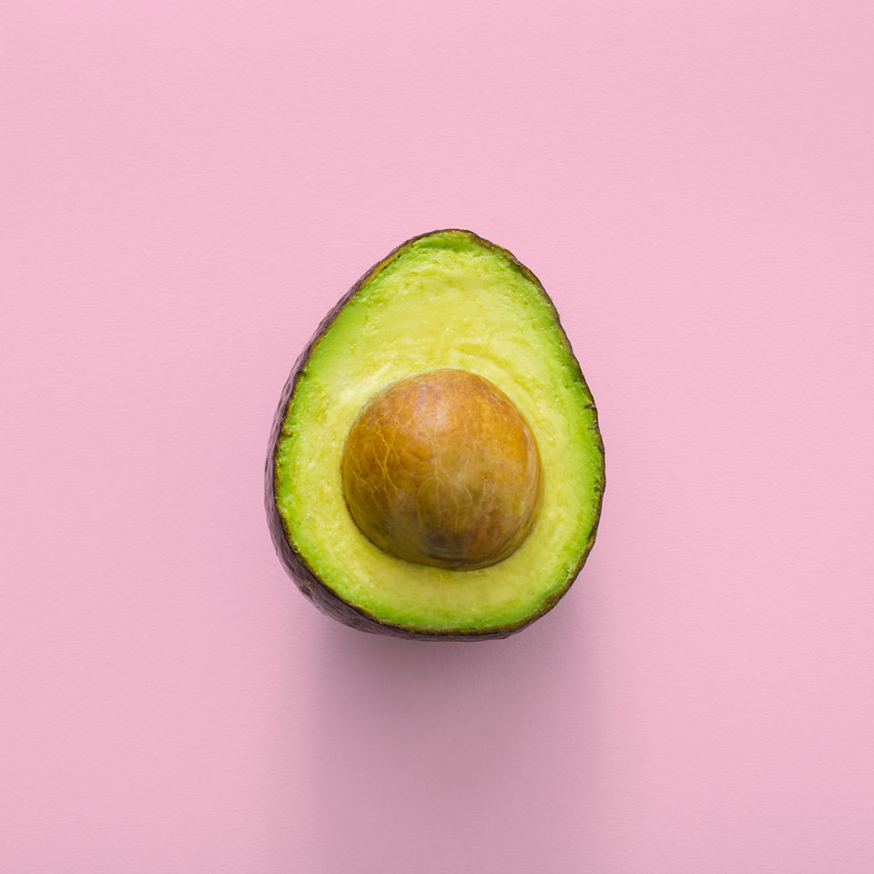

Hello!
Anagha Raghunandan

I'm Anagha, a 11th grader from India.
I’ve grown to like biology, specifically Neuroscience, Medicine and Marine biology, and I would like to be a researcher and develop sustainable solutions.
I've acquired interest in creating community awareness in every area I work on, and Learning how to work collaboratively with others.
Solutions-Based Research Projects
We only know one habitable place–the earth we have to collaboratively fight to to save it now more than ever. For this reason, I have tried to engage myself in tangible ways to take climate action, like working on two student level solutions-based research projects. They are about creating awareness, driving behavioral changes and making our communities be a part of the solution.
Working on these project helped me recognize my own spirit: taking initiative, risk-taking, working collaboratively, trying to express my creativity, curiosity, and excitement.
Groundwater Recharge
2021-PresentGIS based solution for groundwater recharge. The effective implementation of artificial recharge schemes depends on the identification of appropriate locations and structures. Collaborating with: Marvi (http://www.marvi.org.in/)
ESRI INdia (https://www.esri.in/en-in/home) Scientist from Central Ground Water Board (CGWB) Solution is also proposed by IIT Guwahati, India, and the Western Sydney University, Australia, for further research under the Australia-India Strategic Research Fund (AISRF) Round 14, funded by the Governments of Australia and India.
Here is the link to the Peer Review of the idea and the paper: https://tinyurl.com/2p8bfz2b Here is the link to the initial paper: https://tinyurl.com/29xm953a I have given a radio talk show in All India Radio on this topic - "Increasing the community participation in The Groundwater Recharge Projects" during Nov-2021. Here is the link to the All India Radio Talk: https://tinyurl.com/yeykfddk
Carbond Footprint Label
2020-PresentCreating consumer awareness about how individuals are responsible for greenhouse gas emissions by blockchain based carbon footprint labeling.
Diet and Seizures
2022-PresentExploring a new student research project with the Drosophila Neurogenetic Lab @ https://mangaloreuniversity.ac.in/shamprasad
planning in progress for 2022 summer after lab visits.Others
Volunteering
Over 100 hours of Volunteering on zooniverse.org platform for people-powered research project to assist professional researchers.
Projects I worked are: Looking for patterns in lymph nodes OceanEYEs Climate Action - nanoparticle catalyst systems Etch A Cell - Study Endoplasmic ReticulumPerforming Arts
For me music is a language of the emotions, like many I like to listen to many types and play violin.
Learning and practicing Indian classical violin for last 7 year from guru Sri. Vishwas Krishna, disciple of maestro Sri. Lalgudi G. Jayaraman and vidwan Sri. Vittal Ramamurthy.
Hosted and participated in a fund raiser event for school supplies to community schools of tribal areas.
Sports
Endurance Running
2019 - 1⁄2 Marathon finisher 2:24:11
13 mile when I was 13 :-)2018 - 10K finisher 1:07:20
2019/2020 - 10K and 5k finisher
Awards & Recognitions
1. Microsoft Imagine Cup 2022 India Winners - Earth Category “Carbon Footprint Labelling For Responsible Consumption” - Feb 2022
2. General Public Awarded for Innovation Winner - "Carbon Footprint Labelling For Responsible Consumption" Issued by Karnataka Science and Technology Academy, GOVERNMENT OF KARNATAKA - Aug 2021
3. Clean Tech Competition Semi Finalist - "GIS based solution for groundwater recharge" Issued by Center for Science Teaching & Learning - cstl.org - Jun 2021
4. Sahyadri Science Talent Hunt - SSTH 2020 Winner. Issued by Sahyadri College of Engineering & Management, Mangalore, India - Dec 2020